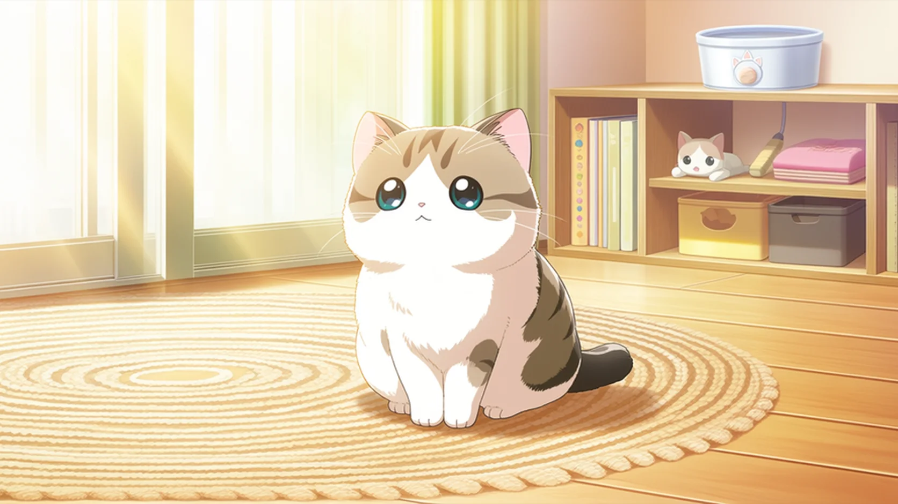
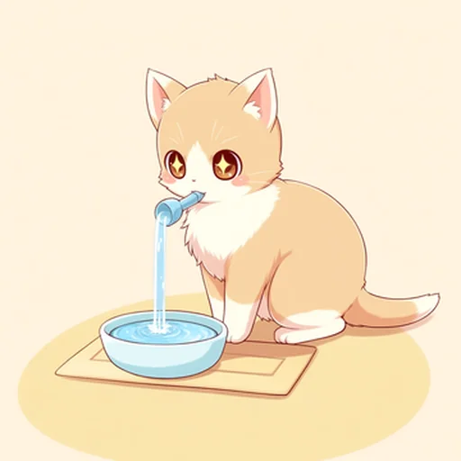
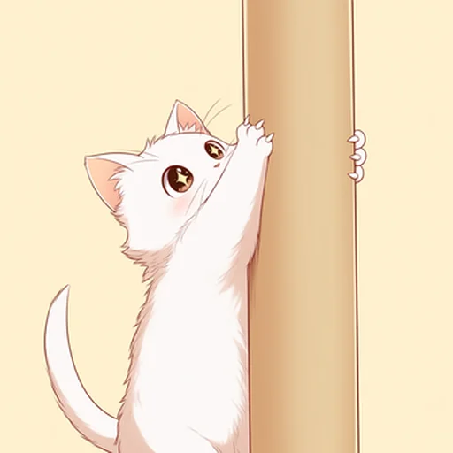
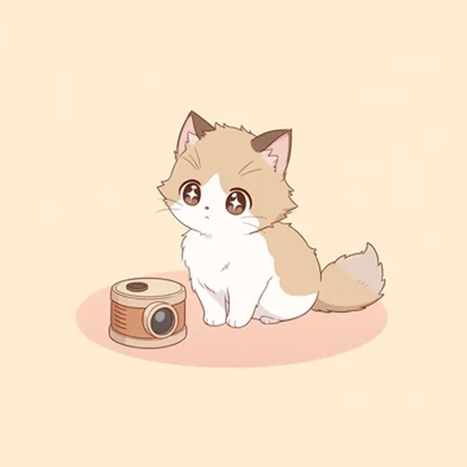
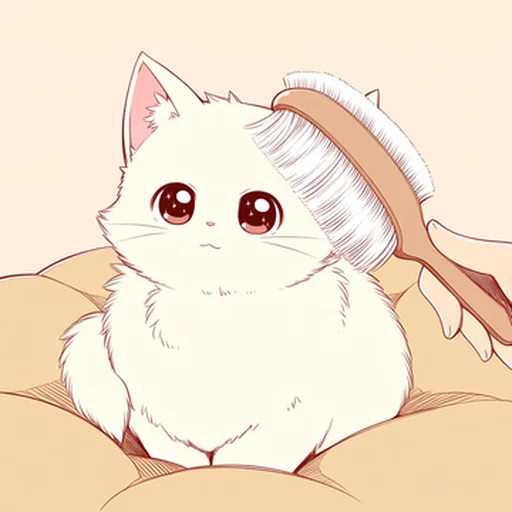
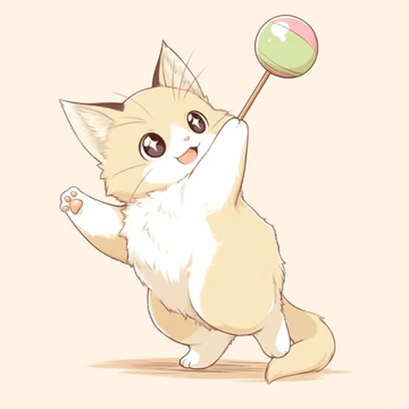

猫と暮らすヒント猫と暮らす、
毎日のヒント
水を飲まない・爪とぎ・留守番…よくある猫の困りごとの原因と、今日からできる対策を、やさしくまとめています。
猫ファースト ・ 体調の不安は受診を優先
猫のお悩み記事気になることから読む

水・食事猫が水を飲まない…原因と今日からできる対策猫が水を飲まない原因と、今日からできる工夫をやさしく解説。水飲み場の置き方や器の選び方、…
爪とぎ猫が家具で爪とぎ…やめさせる前にできる対策猫が家具やソファで爪とぎする理由と、叱らずにやめさせる対策。爪とぎの素材・置き場所の選び…
留守番猫の留守番は何時間まで？さみしさ・退屈の工夫猫の留守番は何時間まで大丈夫か、さみしさや退屈への対策、見守りカメラの使いどころをやさし…
お手入れ猫の抜け毛がすごい…ブラッシングと部屋ケアのコツ猫の抜け毛が多い時期の対策。ブラッシングの頻度とコツ、嫌がりにくい道具の選び方、毛球症の…
遊び猫が遊び足りない？運動不足のサインとおもちゃ選び猫の運動不足のサインと、遊び足りない時の対策。安全なおもちゃの選び方、遊ばせ方のコツ、誤…困りごとから探す猫の様子に近いものへ
 うちの子は何タイプ?
うちの子は何タイプ?
6つの質問で性格タイプと“いまの気持ち”が分かります。
6問・約1分診断をはじめる
グッズから探したい方へ記事のあとに、そっと